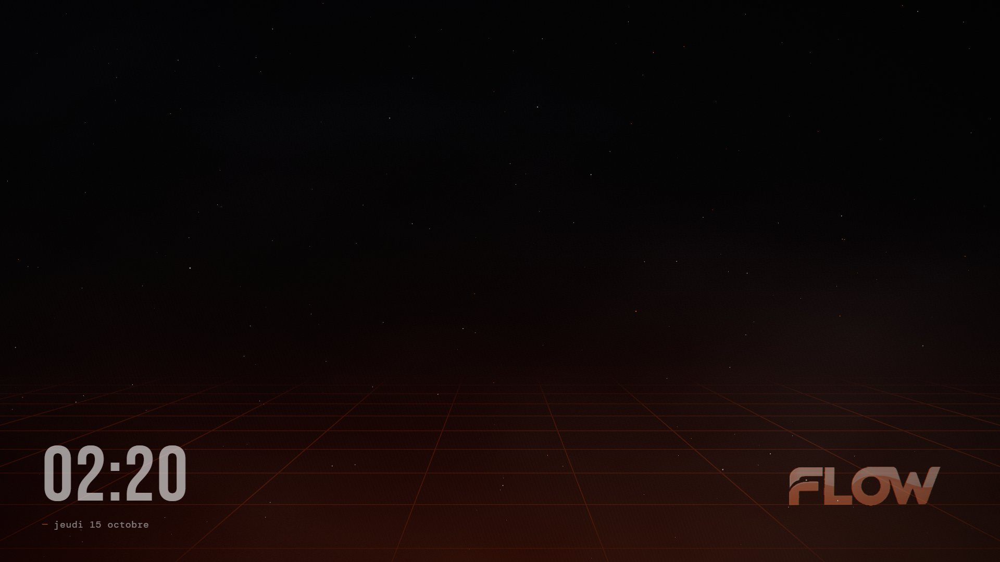
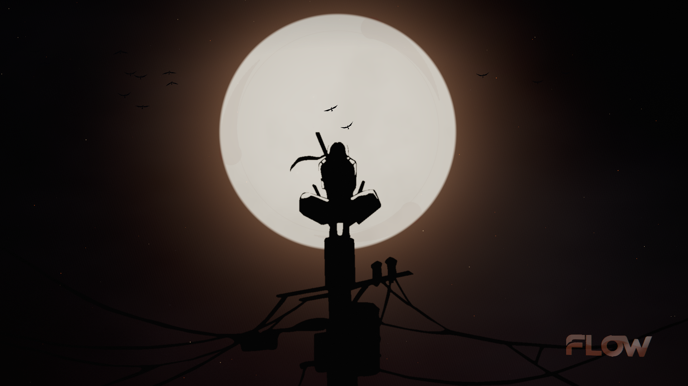
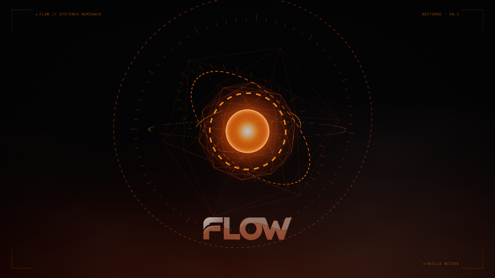

Nuit Flow NEUTRE
Le thème pour bosser dessus huit heures : encre, poussière en profondeur, sol holographique à peine là, la marque en bas à droite. Rien ne bouge vite, rien ne crie.
Trois scènes animées pour le bureau, calibrées pour la nuit : lune ivoire, encre, braises orange Flow, holo. Le rouge vif d'Itachi devient une nuit profonde où la composition reste, mais ne pique plus les yeux.

Le thème pour bosser dessus huit heures : encre, poussière en profondeur, sol holographique à peine là, la marque en bas à droite. Rien ne bouge vite, rien ne crie.

La composition du fond d'origine, en version nuit. Les corbeaux s'envolent du poteau, se dissolvent en encre puis en braises, un anneau de tomoe fantôme tourne dans le halo.

Le HUD d'un atelier Stark en orange Flow : cœur fresnel, anneaux segmentés qui tournent sur trois axes, graduations, filaire, étiquettes mono qui clignotent.
Le fond d'origine pose un rouge saturé sur toute la surface et une lune à 100 % de blanc : l'œil n'a nulle part où se poser le soir. Ici le ciel est de l'encre, la lune une ivoire chaude qui plafonne à 76 % de luminance, et l'orange Flow n'apparaît que sur des points : braises, holo, grille. Mesures faites sur les images réelles en 1920 × 1080 (luminance relative, image gelée à t = 14 s).
| Image | Luminance moyenne | Pic | Pixels > mi-gris |
|---|---|---|---|
| Fond d'origine (rouge) | 20,3 % | 100 % | 12,9 % |
| Uchiha, version nuit | 9,5 % | 76 % | 14,9 % |
La part de pixels au-dessus du mi-gris monte un peu : la lune et son halo occupent plus de surface, mais à 76 % au lieu de 100 %, et la luminance moyenne de l'écran est divisée par deux. Le réglage « Luminosité » descend à 20 % si besoin, et « Confort nuit » retire le bleu.
| Réglage Lively | Effet |
|---|---|
| Scène | Nuit Flow · Uchiha · Jarvis |
| Luminosité 20–120 | Exposition globale ; 70 la nuit, 100 le jour |
| Mouvement 0–100 | 0 = image fixe, le GPU ne rend plus rien |
| Particules 0–100 | Poussière, braises, corbeaux |
| Parallaxe | La caméra suit le curseur, sinon dérive lente |
| Logo · Heure | Marque holographique ; horloge Bebas Neue |
| Couleur d'accent | Orange Flow par défaut, libre |
| Confort nuit | Lune ivoire, moins de bleu |
| Lueur · Éco | Bloom ; 30 i/s sans bloom, résolution 1× |
Accessible par construction. Le réglage système « réduire les animations » est respecté : une seule image, plus de rendu. « Mouvement » à 0 fait pareil à la main, pour les troubles vestibulaires ou l'attention. « Luminosité » et « Confort nuit » couvrent la photosensibilité. Les textes (heure, étiquettes) sont du DOM, pas des pixels dans le canvas : ils restent lisibles par un lecteur d'écran et nets à toute résolution.
Léger par défaut. Un seul fichier, aucune requête réseau, résolution plafonnée à 1,5×, rendu suspendu quand Lively met le fond en pause (plein écran, jeu).
Flow-Nocturne-lively.zip dans la fenêtre Lively. Le fond apparaît dans la bibliothèque.#080808, orange #FF7A00, blanc #F2F2F2, Bebas Neue + DM Sans + DM Mono, logo : relevés sur flow-consulting.fr.Ce qui est livré ici n'est pas trois images : c'est un moteur et un jeu de jetons (accent, luminance, mouvement, densité, confort, éco) que chaque scène interprète. Le thème neutre est la base de travail ; les thèmes « lore » sont des peaux par-dessus, et les curseurs d'accessibilité sont les mêmes pour tous.
C'est exactement la mécanique d'une banque de thèmes pour des interfaces métier : une grammaire commune (jetons, états, contrastes, mouvement réduit, lecture d'écran), un thème neutre irréprochable, puis des peaux à l'infini, du sobre au Sharingan, sans jamais casser l'usage. La cartographie des métiers vient nourrir la couche d'en dessous : quels écrans, quels gestes, quelles données chaque savoir-faire manipule.